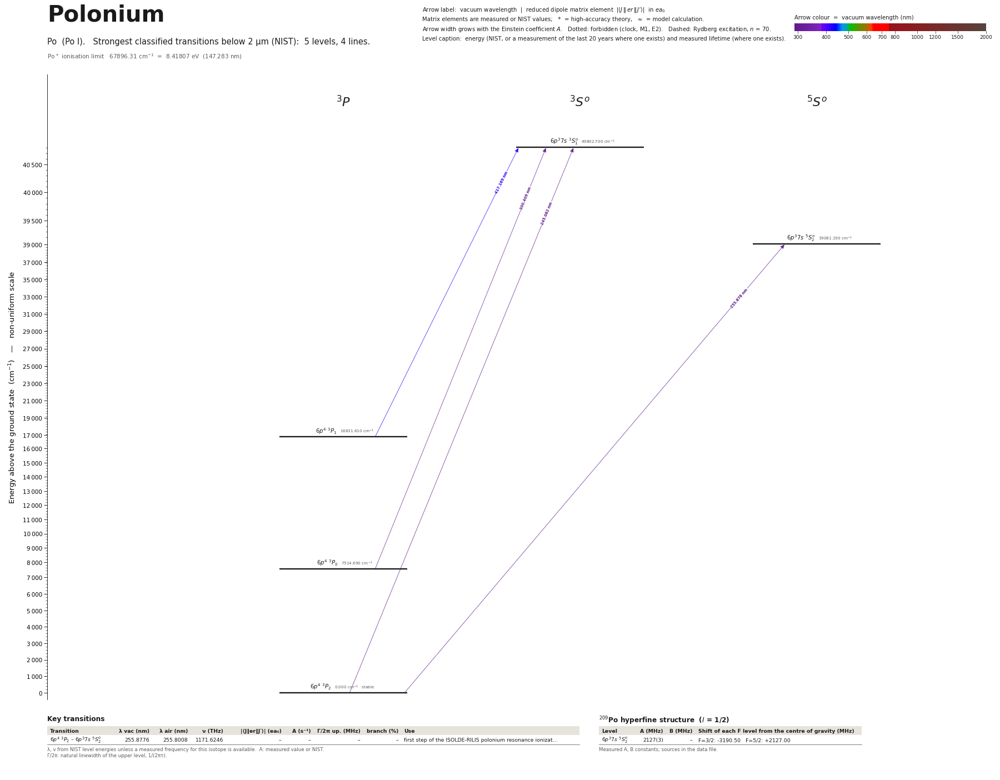

Polonium energy level diagram
Energy levels and transitions of neutral polonium (Po I): the 4 strongest classified lines below 2 µm from the NIST Atomic Spectra Database and the 5 levels they connect, each line with its vacuum wavelength, frequency and, for 0 of them, the reduced dipole matrix element derived from the NIST transition rate. Measured lifetimes, transition rates, hyperfine constants and isotope shifts from the literature are included, each with its citation.
Hover a line or a level to isolate it, click to keep it selected. Scroll to zoom, drag to move.

Download: diagram (PDF) diagram (SVG) transitions (CSV) levels (CSV) source code

Key transitions of polonium
| Transition | λ vac (nm) | λ air (nm) | ν (THz) | |⟨J‖er‖J′⟩| (ea₀) | A (s⁻¹) | Γ/2π up. (MHz) | branch (%) | Use |
|---|---|---|---|---|---|---|---|---|
| 6p4 3P2 – 6p37s 5S°2 | 255.8776 | 255.8008 | 1171.6246 | – | – | – | – | first step of the ISOLDE-RILIS polonium resonance ionizat… |
λ, ν from NIST level energies unless a measured frequency for this isotope is available. A: measured value or NIST. Γ/2π: natural linewidth of the upper level, 1/(2πτ).
209Po hyperfine structure (I = 1/2)
| Level | A (MHz) | B (MHz) | Shift of each F level from the centre of gravity (MHz) |
|---|---|---|---|
| 6p37s 5S°2 | 2127(3) | – | F=3/2: -3190.50 F=5/2: +2127.00 |
Measured A, B constants; sources in the data file.
Listed Po transitions below 2 µm
| Lower level | Upper level | λ vacuum (nm) | λ air (nm) | ν (THz) | Type | |⟨J‖er‖J′⟩| (ea₀) | A (s⁻¹) | Branching (%) | Source of matrix element / A |
|---|---|---|---|---|---|---|---|---|---|
| 6p4 3P2 | 6p37s 3S°1 | 245.0818 | 245.0076 | 1223.2342 | E1 | – | – | – | – |
| 6p4 3P2 | 6p37s 5S°2 | 255.8776 | 255.8008 | 1171.6246 | E1 (intercombination) | – | – | – | – |
| 6p4 3P0 | 6p37s 3S°1 | 300.4085 | 300.3209 | 997.9494 | E1 | – | – | – | – |
| 6p4 3P1 | 6p37s 3S°1 | 417.1692 | 417.0516 | 718.6352 | E1 | – | – | – | – |
Reduced dipole matrix elements follow the convention A = ω³|d|²/(3πε₀ħc³(2J′+1)), with J′ the upper level. Tags show where a number comes from: measured, NIST compilation, high-accuracy theory, or a model calculation.
Po energy levels
| Level | Energy (cm⁻¹) | J | Parity | Lifetime | gJ | Hyperfine A (MHz) | Hyperfine B (MHz) | Lifetime source | Hyperfine source |
|---|---|---|---|---|---|---|---|---|---|
| 6p4 3P2 | 0.000 | 2 | even | stable | – | – | – | – | – |
| 6p4 3P0 | 7514.690 | 0 | even | – | – | – | – | – | – |
| 6p4 3P1 | 16831.610 | 1 | even | – | – | – | – | – | – |
| 6p37s 5S°2 | 39081.190 | 2 | odd | – | – | 2127 | – | – | Kowalewska, Bekk, Goering, Hanser, Kaelber, Meisel, Rebel, Phys. Rev. A 44, R1442 (1991) … |
| 6p37s 3S°1 | 40802.700 | 1 | odd | – | – | – | – | – | – |
Po⁺ ionisation limit 67896.31 cm⁻¹ = 8.41807 eV (147.283 nm)
Sources
- Kowalewska, Bekk, Goering, Hanser, Kaelber, Meisel, Rebel, Phys. Rev. A 44, R1442 (1991) …
- NIST ASD level energies
All optical data are from in-source resonance ionization spectroscopy at ISOLDE (Doppler-limited, GHz linewidths). Isotope shifts are nu(A) - nu(210). Hyperfine keys: 'ls'/'hs' = low-spin (3/2-) and high-spin (13/2+) states of 193,195Po whose ordering is not known; a trailing 'm' = 13/2+ isomer. The hyperfine constants listed under the 39081.19 cm^-1 level were printed in GHz and are converted to MHz here. The site's default isotope may have I = 0 (208, 210Po) - then no hyperfine structure applies.
Atoms with measured data
- Lithium-632 levels, 85 lines
- Lithium-732 levels, 85 lines
- Beryllium-917 levels, 26 lines
- Sodium-2336 levels, 106 lines
- Magnesium-2418 levels, 61 lines
- Magnesium-2518 levels, 61 lines
- Potassium-3934 levels, 84 lines
- Potassium-4034 levels, 84 lines
- Potassium-4134 levels, 84 lines
- Calcium-4035 levels, 61 lines
- Calcium-4335 levels, 61 lines
- Chromium-5256 levels, 87 lines
- Chromium-5356 levels, 87 lines
- Rubidium-8536 levels, 94 lines
- Rubidium-8736 levels, 94 lines
- Strontium-8440 levels, 70 lines
- Strontium-8640 levels, 70 lines
- Strontium-8740 levels, 70 lines
- Strontium-8840 levels, 70 lines
- Cadmium-11115 levels, 21 lines
- Cadmium-11315 levels, 21 lines
- Cadmium-11415 levels, 21 lines
- Caesium-13331 levels, 79 lines
- Barium-13744 levels, 89 lines
- Barium-13844 levels, 89 lines
- Dysprosium-16139 levels, 55 lines
- Dysprosium-16239 levels, 55 lines
- Dysprosium-16339 levels, 55 lines
- Dysprosium-16439 levels, 55 lines
- Erbium-16673 levels, 90 lines
- Erbium-16773 levels, 90 lines
- Erbium-16873 levels, 90 lines
- Thulium-16972 levels, 73 lines
- Ytterbium-17118 levels, 26 lines
- Ytterbium-17318 levels, 26 lines
- Ytterbium-17418 levels, 26 lines
- Mercury-19927 levels, 47 lines
- Mercury-20127 levels, 47 lines
- Mercury-20227 levels, 47 lines